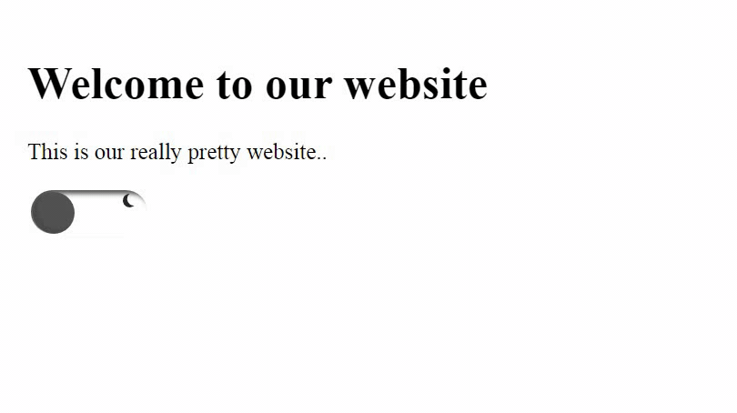

In the process of making my personal website I played around making an interactive switch for Dark/Light modes of my website. So I am going to present you my solution and If you like it you can see the steps of how I build it using vanilla JavaScript.
What we are making

Steps
1. Make your static website
Pretty simple design, in this post we will focus more on the switch and not on the look of the website. Make sure to include some text so we can see the change between the dark mode and light mode and don't forget the input. This is what I made:
See the Pen post3.1 by Jovan M. (@miljkovicjovan) on CodePen.
2. Make Function to toggle .dark-mode with input
We will use an onclick function that will apply the .dark-mode CSS rules to our website. It is easy and looks something like this:
function myFunction() {
var element = document.body;
element.classList.toggle("dark-mode");
}
Don't forget to add the onclick="myFunction()" part in the input tag. Looks like this :
See the Pen post3.2 by Jovan M. (@miljkovicjovan) on CodePen.
So we made the dark mode switch but let's start customizing it in CSS and making it look more like a switch .
3. Customization in CSS
First I made the switch look like an actual switch and played around with the colors schemes until I found a pretty good one. Then I researched a bit how to make content: '' into a sun and a moon so I could make a cool animation like switching from daytime to nightime. I played around and found the best design for each and the best colors. The only thing left was to use an animation and use keyframes to "animate" the sun and moon. And after around a half our of work it was done. Here is the code:
See the Pen post3.3 by Jovan M. (@miljkovicjovan) on CodePen.
You can get the whole folder here
GitHubThank you for reading!
I hope this article helps you and becomes useful, any critism is accepted and I encourage you to ask any questions in the comments.
Thanks again,
Stay safe,
~Jovan